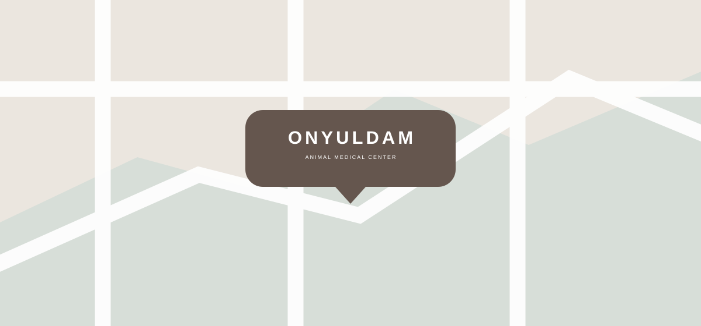
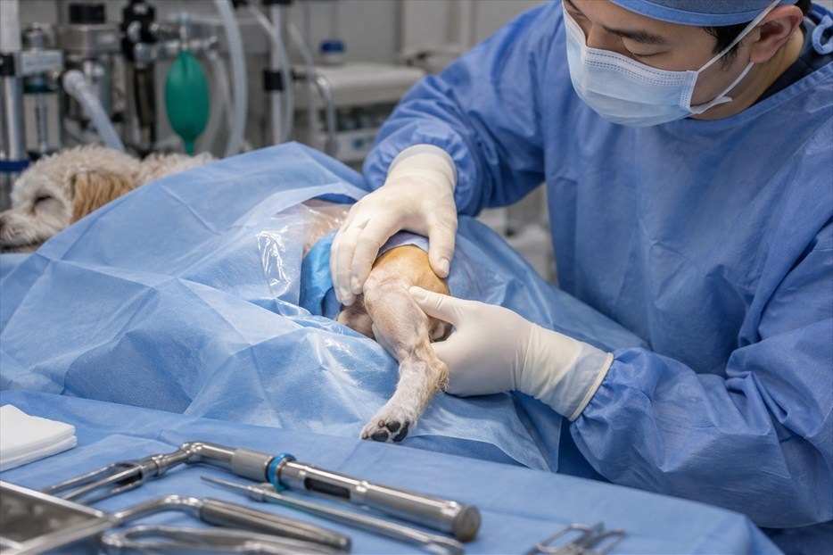
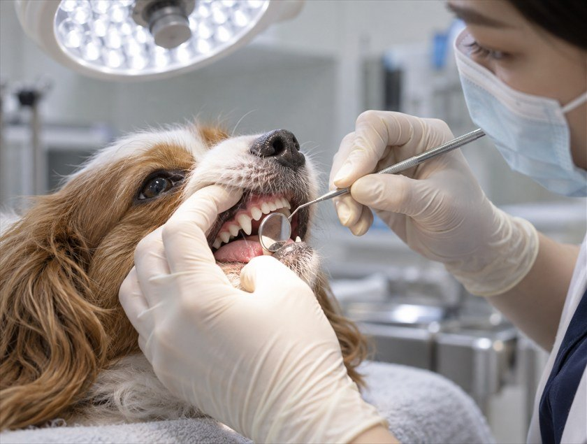
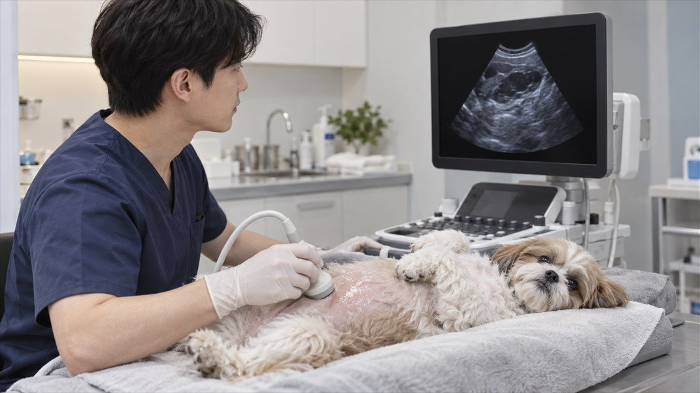
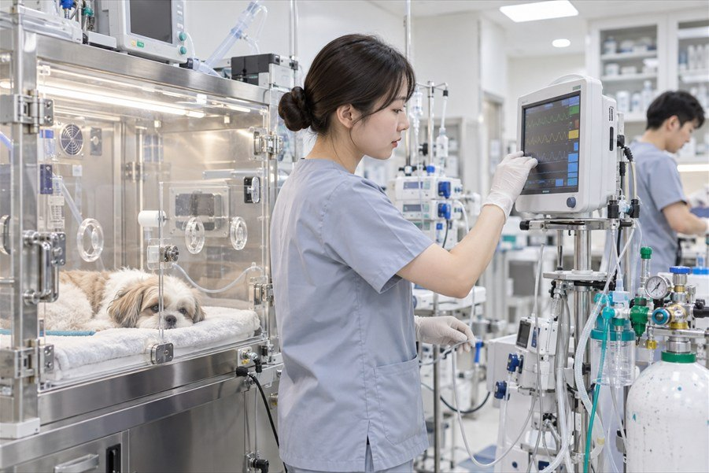
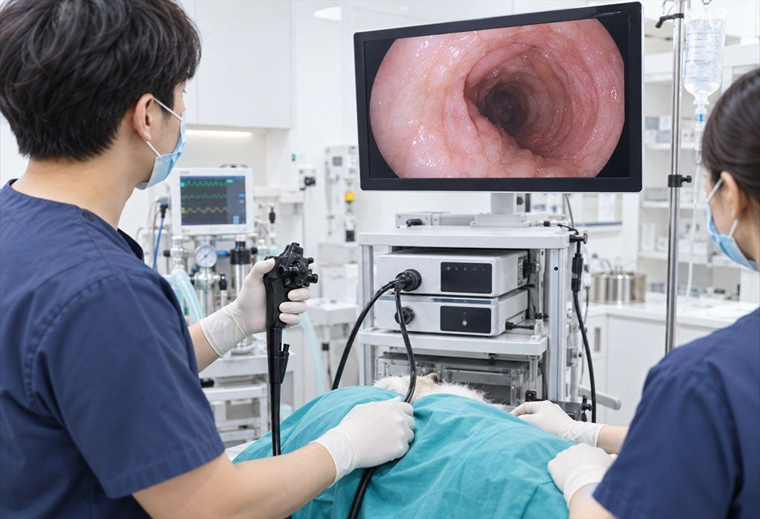
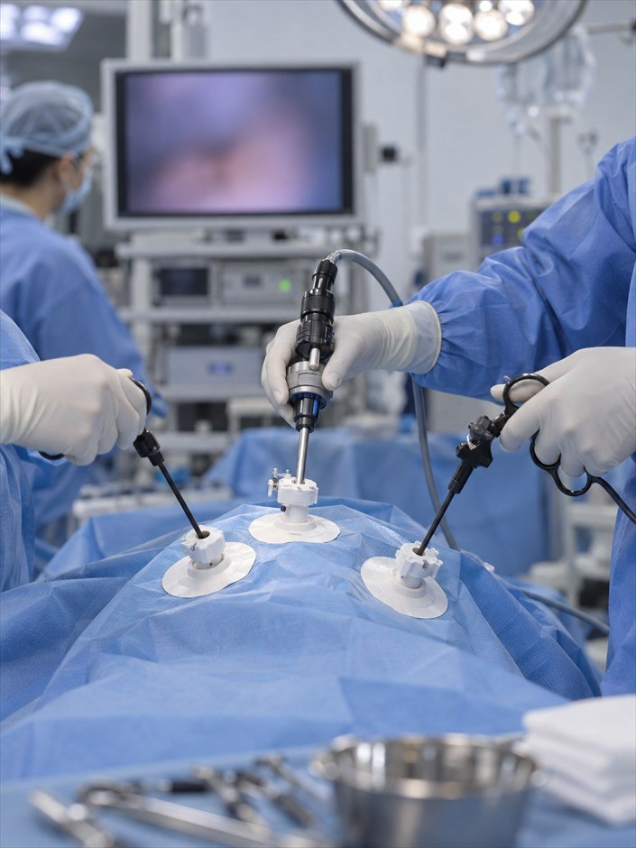
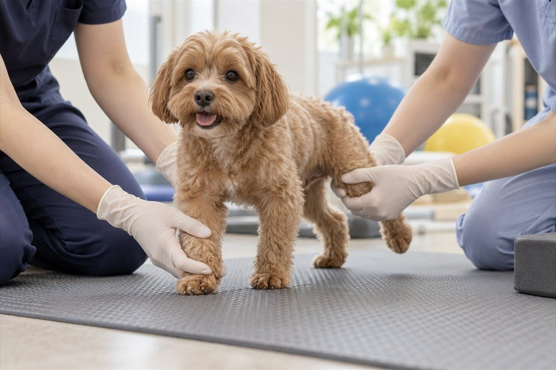

Medical Subject
24시 온율담의
특화진료센터
분야별 의료진이 상담부터 진료와 수술까지 책임 있게 함께합니다.
Onyuldam SNS
사랑스러운
온율담 친구들을 만나보세요.
Contact Us
오시는 길
-
오시는 길
서울 강남구 테헤란로 123 민트클빌딩 5층주차정보
건물 지하 주차장 이용이 가능합니다.
-
진료시간
매일
00:00~24:00점심시간
13:00~14:00저녁시간
17:30~18:30
-
문의전화
010-4894-4905


정형외과센터
온율담 정형·관절센터는 반려동물의 뼈와 관절 질환을 진단하고 치료합니다.
강아지에게 흔한 슬개골 탈구와 고관절 질환, 십자인대 파열, 사고로 인한 골절 같은 질환부터 까다로운 경우까지 정확히 진단하고 수술과 재활 치료를 이어 갑니다.
뇌·신경센터
반려동물의 뇌와 척수, 말초 신경에 문제가 생기면
발작, 경련, 시력 저하, 걸음 이상, 네 다리나 뒷다리 마비, 통증, 비틀거림, 고개 기울어짐 같은 신경 증상이 나타납니다.
뇌신경센터는 검사로 신경계 상태를 꼼꼼히 평가해 진단하고, 그에 맞춰 수술이나 약물 치료, 재활 치료를 진행합니다.

구강·치과센터
치과 동물은 아파도 티를 내지 않고 오히려 숨기려 해서, 입안 질환이 생각보다 늦게 발견되곤 합니다. 치과는 이런 질환을 제때 찾아 단계에 맞게 치료하고, 입안 통증을 덜어 씹는 기능을 되찾는 데 힘씁니다. 안전한 마취 체계와 치과 전용 수술실에서 레진, 신경 치료, 크라운, 발치까지 진행합니다.

정밀영상센터 안내
반려동물은 어디가 어떻게 아픈지 말로 알려 줄 수 없습니다.
그래서 영상 검사가 진단의 중요한 근거가 됩니다.
MRI·CT센터는 1.5T MRI와 저선량 다중채널 CT를 갖추고 있으며, 영상의학을 전공한 수의사가 꼼꼼히 판독해 정확한 진단을 돕습니다.

심장·신장센터
영상 유도 시술
심장은 반려동물이 살아가는 데 꼭 필요한 산소와 영양분을 실은 혈액을
온몸에 보내는 펌프로, 생명을 지키는 데 가장 중요한 기관입니다.
심장에 문제가 생기면 다른 장기까지 영향을 받아 생명이 위험해질 수도 있습니다.
24시 온율담동물의료센터 심장센터는 심장 질환으로 힘든 반려동물이 필요한 검사를 거쳐 정확히 진단받고 치료받을 수 있도록 돕습니다.

중환자집중센터
계속 지켜봐야 하는 중증 환자, 오래 치료해야 하는 만성 중증 환자, 큰 수술 뒤 집중 회복이 필요한 환자를 위해 24시간 돌아가는 집중치료실(ICU)을 운영합니다. 환자마다 주치의와 담당 테크니션을 정하고 진료과끼리 함께 살펴, 중증 · 복합 질환 환자가 고비를 넘길 수 있도록 힘씁니다.

최소침습수술센터
내시경/복강경/흉강경/관절경
최소침습수술센터는 수술할 때 절개를 되도록 작게 해서
환자가 더 빨리, 덜 아프게 회복하도록 돕습니다.
복강경으로 배를 열지 않고 하는 복강 장기 수술, 관절경으로 하는 관절 치료,
그리고 정밀 내시경 같은 장비로 몸에 부담이 적은 수술을 하며, 빠르고 덜 아픈 치료를 위해 힘쓰고 있습니다.

통합재활센터 안내
수술 앞뒤의 재활, 수술 없이 하는 한방 치료와 운동 재활로 수술 결과를 높이고
되도록 예전과 가까운 생활로 돌아갈 수 있게 돕습니다.
24시 온율담동물의료센터에서는 수의 침술 전문가(CVA) 과정과 반려동물 재활 전문 자격(CCRT)을 갖춘 원장들이 재활 치료를 이끌고 있습니다.